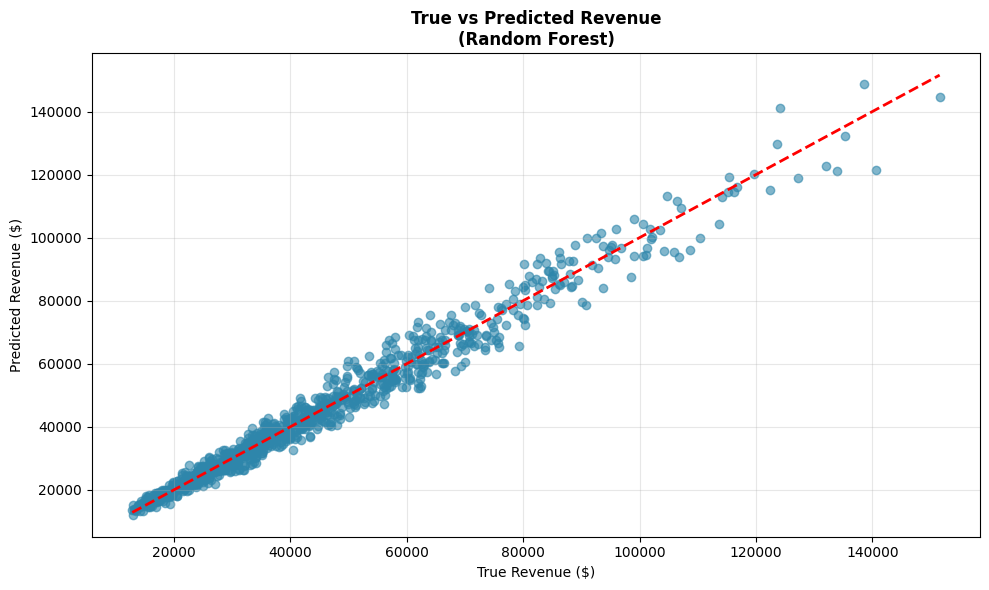

Projects · Business Analytics
Zara Revenue Forecasting
Predicting how much revenue a new Zara product will generate before it ever reaches a store, so pricing and promotion calls don't rely on guesswork.

Problem
Why this matters
Retailers set price, promotion, and initial stock for a new item before they have a single day of sales data on it. Get that call wrong and the business either over-invests in a product that won't move, or under-stocks one that would have sold well. The goal of this project was to build a model that predicts how much revenue a new item will make, using only the attributes known before launch — so that decision can be made on evidence instead of instinct.
Approach
How it was built
Dataset: ~20,000 rows × 17 columns of Zara fashion products, covering price, sales volume, revenue, promotion status, section, season, material, and product position.
Model: a Random Forest regressor predicts sales volume; revenue is then calculated as price × predicted volume. Features used: price, promotion, section, season, material, and product position. Data was split 70/25/5 into train/validation/test.
Results
What the model achieved
R² 0.975
Explains 97.5% of the variation in revenue on held-out data
MAE ~$2,674
~6.4% of average revenue per item
+38%
Median revenue lift from promotion on best-sellers ($33,347 → $45,916)
Insight
What it means for the business
Predicted revenue tracks true revenue closely across the full price range (see chart below) — the model isn't just accurate on paper, it's accurate on the items that matter most. Correlation analysis on the underlying data shows why: price drives revenue directly (r = 0.83), and promotion drives it mainly by lifting volume (r = 0.89 with volume, r = 0.32 with revenue directly). Section, season, and shelf position barely move the needle (r between 0.01 and 0.09) — so a merchandising team can stop debating store layout and focus on price and promotion instead.
The top 10 best-selling products by revenue are 100% women's section, 100% promoted, 60% summer season, averaging $112.77 in price — a concrete profile a buyer can act on before launch, not just a model score. And promotion isn't just a revenue trick: modeling cost at 40% of price, average profit per product is $22,548 without promotion versus $31,330 with it, a 38.9% increase — so the discount is more than paid for by the extra volume.

Predicted vs. true revenue on the test set — points hug the diagonal across the full range, including the highest-revenue outliers.
What's next
In progress
Building a Looker Studio dashboard on top of this dataset — scorecards, a time series by month/season, and a category/price-tier breakdown — to make these results interactive instead of static. Will link it here once it's published.